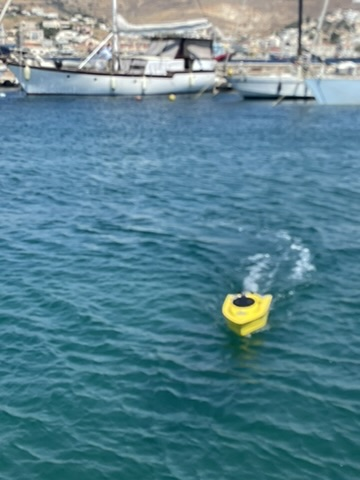
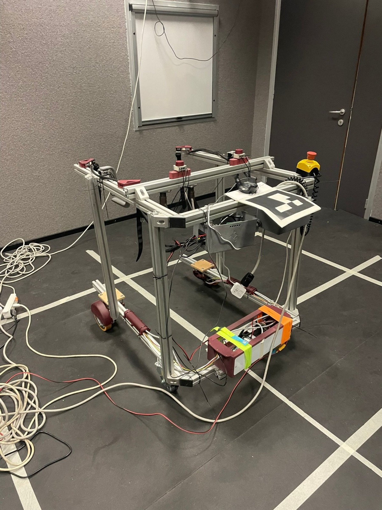
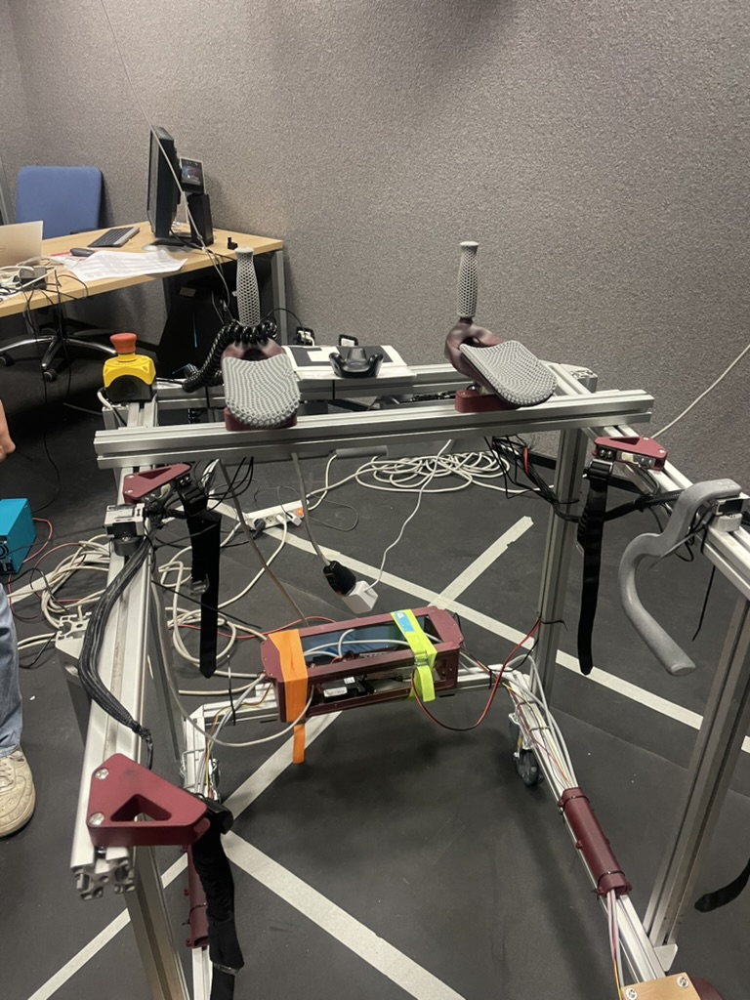
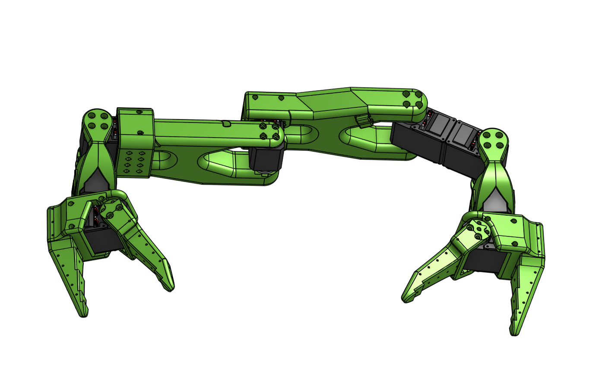
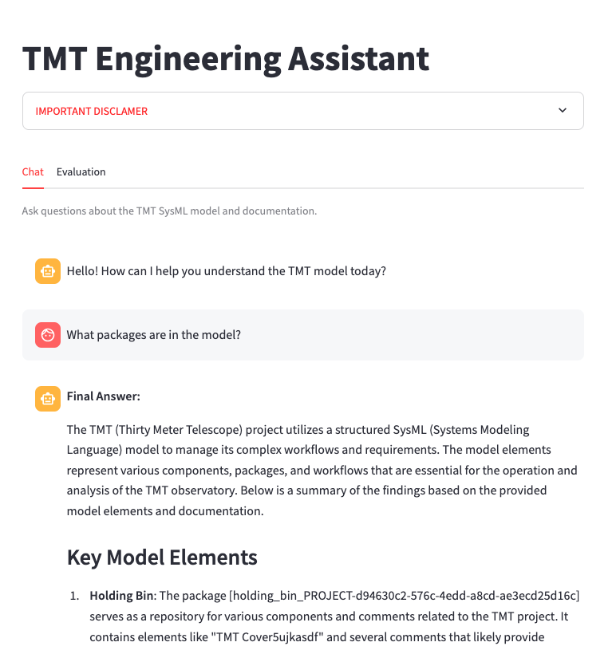

MSc student in Autonomous Systems at KTH Stockholm & University of Trento. I work on robots, drones and computer vision. Looking for a thesis or internship from January 2027.
Education
Experience
- Building XLeRobot, a dual-arm mobile robot with stereo vision, for VLA research.
- Testing VLA policies (ACT, SmolVLA) and VLM task planners on LeRobot.
- Built stereo calibration and a C++ depth pipeline; set up the MuJoCo simulation.
- Built automation tools used by 20 artists in production; processed 100k+ frames.
- Fine-tuned image and video generation models; onboarded artists to AI tools.
- R&D: built Gaussian splatting pipelines for 3D scene reconstruction.
- Fine-tuned YOLO11 detectors on 2k industrial images; validated on-site.
- Researched vision-language models for industrial inspection.
- Built a company-wide hybrid RAG system (dense + BM25, re-ranking) over 3k+ documents.
- Engineered a live embedding pipeline with continuous ingestion and vector indexing.
Projects
XLeRobot
A dual-arm mobile robot with stereo vision for vision-language-action research. I built the arms and the stereo calibration and C++ depth pipeline, set up the MuJoCo simulation, and test ACT and SmolVLA policies.

Autonomous boat
Built and field-tested an ArduPilot surface vessel: GPS waypoint missions in open water, plus vision-based following, where YOLO detects a lead boat and the autopilot steers to track it over MAVLink.



SLAM on a mobile platform
Robotic Perception and Action course project: localization and mapping on a wheeled platform with markers and trackers, implemented in MATLAB and ROS 2.


Dual-arm brachiation robot
A modified SO-ARM100 with a gripper on each end that moves by swinging between holds. The swinging motion is trained with reinforcement learning and curriculum training in MuJoCo.

FPV drones
Built and tuned three quadcopters with Betaflight, including gyro and accelerometer flight control and GPS return-to-home. EASA A1/A3 remote pilot.


Smart visual alarm
Runs person detection on the ESP32-S3-EYE itself, confirms repeated detections, and sends an MQTT alarm that a Python backend forwards to Telegram.


RAG engineering agent for the Thirty Meter Telescope
An assistant that answers engineering questions from the TMT project's technical documentation, using retrieval-augmented generation.

Drone swarm VLM
A drone swarm controlled by a vision-language model.
Smaller projects
- Hand Splat LabGaussian splats controlled by hand tracking and MIDI
- RL Visual LearnerInteractive reinforcement learning explainer
- AI generation cost trackerPer-project AI spend for studios
- BosslayersMulti-agent orchestration for media studios
- Skin lesion classificationDeep learning on HAM10000, NOVA IMS
Skills
- Robotics & ML
- Robot learning, imitation learning, teleoperation, SLAM, camera calibration, stereo vision, object detection, 3D reconstruction
- Languages
- Python, C++, MATLAB, Bash
- Tools
- ROS 2, PyTorch, LeRobot, MuJoCo, OpenCV, YOLO, ArduPilot, MAVLink, Docker, FastAPI, Azure, Git, Linux
- Licenses
- EASA A1/A3 UAS remote pilot (2024) · Ice hockey referee (Hungary)
- Spoken
- Hungarian (native), English (C1), German (basic)
- Interests
- Drones, biking, skiing, photography, video editing